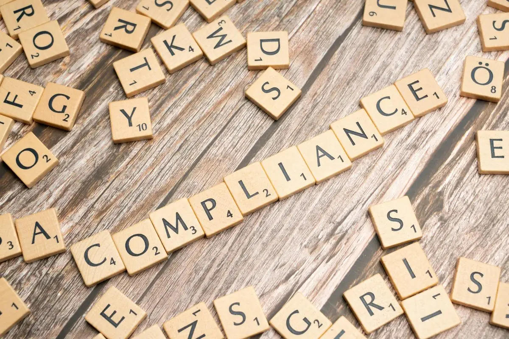

LHDN E-Invoice Phase 3 & 4: What Small Businesses Must Do Before the Deadline (October 2026 Update)
Updated 19 October 2026 for LHDN's latest changes: the RM3 million exemption, the cancellation of the planned RM500,000 to RM1 million phase, and Phase 4's relaxation until 31 December 2027. Sources: LHDN implementation timeline and the e-Invoice Specific Guideline v4.9.
If you run a small Malaysian business and have been treating e-invoicing as "a big-company problem," check that assumption carefully. The mandate now covers every business turning over RM3 million or more, plus smaller companies that belong to a larger group, and Phase 4's grace period has a firm end date: 31 December 2027.
This is a practical, current-state update for owners of small businesses and the legacy POS, accounting, and invoicing systems they run. No fluff about "digital transformation"—just where the rollout stands, what's actually required, and what to do this month.
Dates change. LHDN has revised the e-invoice timeline more than once, including turnover thresholds and grace periods. The schedule below reflects the rollout as announced, but always confirm your exact mandatory date and current rules on the official MyInvois portal (myinvois.hasil.gov.my) before making decisions.
Where the Rollout Stands in Late 2026
Malaysia's e-invoice mandate is phased by annual turnover. The largest companies went first; the smallest go last. Here's the schedule as it stands:
- Phase 1 — 1 August 2024: Annual turnover above RM100 million.
- Phase 2 — 1 January 2025: Annual turnover RM25 million to RM100 million.
- Phase 3 — 1 July 2025: Annual turnover RM5 million to RM25 million.
- Phase 4 — 1 January 2026 (1 July 2026 for some): Annual turnover up to RM5 million, with interim relaxation until 31 December 2027.
- Exempt: Annual turnover below RM3 million, unless a corporate shareholder, holding company or related company turns over RM3 million or more. The previously planned RM500,000 to RM1 million phase is not going ahead.
Find your band. RM5M–RM25M: mandated since mid-2025, and your relaxation is over. RM3M–RM5M: mandated since 1 January 2026, with relaxation until 31 December 2027. Under RM3M: exempt, unless your group structure brings you back in. Not sure which applies? Check in three questions.
The Grace Period Is the Part Everyone Misreads
Each phase comes with an interim relaxation period during which LHDN applies a softer touch. For the first three phases it lasted six months. For Phase 4 it runs until 31 December 2027. This is where most small businesses get a false sense of security.
During the relaxation window, businesses are generally allowed to:
- Issue monthly consolidated e-invoices for all transactions, including those normally excluded from consolidation, such as single sales above RM10,000.
- Decline a buyer's request for an individual e-invoice, as long as you issue consolidated e-invoices.
- Put any description in the product or service field, instead of listing receipt numbers.
- Avoid prosecution under Section 120 of the Income Tax Act, provided you issue those consolidated e-invoices.
The relaxation still has a condition. Consolidated e-invoices must be submitted every month, within seven days after the month ends. And it ends: from 1 January 2028, Phase 4 businesses must issue individual e-invoices on request and stop consolidating sales above RM10,000.
If you've been issuing nothing and hoping the topic goes away, you're outside the no-prosecution condition. LHDN's Special Voluntary Disclosure Programme, open until 31 December 2027, is the way back in without penalties on what you disclose.
What an E-Invoice Actually Requires (Plain Version)
Strip away the jargon and an LHDN e-invoice is a structured digital document that you submit to LHDN's MyInvois system for validation before it becomes a valid invoice. LHDN returns a unique identifier and a validation QR code. Only then do you share it with your customer.
To operate, your business needs, at minimum:
- A registered Tax Identification Number (TIN) for your business, retrievable via MyTax.
- Access to MyInvois—either the free web portal or a system-to-system API connection.
- Correct buyer details captured at point of sale (TIN where required, name, address, registration number).
- A way to handle consolidated e-invoices for retail/walk-in sales where buyers don't request an individual invoice.
- Handling for self-billed e-invoices (for things like foreign supplier purchases, certain commissions, and payments to individuals).
Your Three Realistic Paths to Compliance
1. MyInvois Portal (Manual Entry)
LHDN's free web portal lets you key in e-invoices by hand or upload in batches. Cost: free. Best for: very low invoice volumes—a handful of B2B invoices a month. The catch: manual entry doesn't scale. If you issue dozens or hundreds of invoices, double-keying everything into a separate portal is slow, error-prone, and a daily drain on staff time.
2. Integrate Your Existing POS / Accounting System
Connect the system you already use directly to MyInvois via API so e-invoices are submitted automatically when you ring up a sale or issue an invoice. Cost: varies—some modern cloud POS/accounting vendors have it built in or as an add-on; legacy custom systems need development work. Best for: any business with meaningful invoice volume that wants to keep one workflow.
This is where small businesses on older custom .NET or legacy POS systems hit a wall: their vendor has disappeared, won't support it, or quotes a number that feels punitive. That doesn't automatically mean you need a new system—often a focused integration layer can bridge an old system to MyInvois without a full replacement.
3. Use a Middleware / E-Invoice Provider
A growing number of intermediaries (PEPPOL-accredited providers and local middleware) sit between your system and LHDN, handling validation, formatting, and submission. Cost: typically a monthly subscription or per-document fee. Best for: businesses whose systems can export invoice data but can't talk to LHDN directly, or who want someone else to own the compliance plumbing.
Decision shortcut: Low volume and patient staff → portal. High volume on a healthy modern system → integrate it. High volume on an old or unsupported system → middleware now, plan the integration later. Don't over-buy: many micro-businesses are fine on the free portal.
The Mistakes That Catch Small Businesses
- Assuming you're exempt. The RM3 million exemption doesn't apply if a corporate shareholder, holding company or related company turns over RM3 million or more. Check your group, not just your own figure.
- Treating the relaxation as nothing-required. Monthly consolidated e-invoices are still due, and full rules apply from 1 January 2028.
- Not collecting buyer TINs. If a B2B customer needs to claim the expense, they'll demand a proper validated e-invoice with their TIN—and your point-of-sale flow needs to capture it.
- Ignoring self-billed scenarios. Paying foreign suppliers or commissions can trigger self-billed e-invoice obligations people forget entirely.
- Leaving it to the last week. TIN issues, portal onboarding, and integration testing all take longer than expected. Surprises surface during testing, not planning.
- Buying a whole new system in a panic. Compliance is often achievable on your existing setup with far less money than a rushed replacement.
Your Action Checklist for the Next 30 Days
- Confirm your turnover band and exact mandatory date on the MyInvois portal. Don't guess.
- Retrieve your business TIN via MyTax and verify your details are correct.
- Register and log in to MyInvois—even if you'll integrate later, get familiar with the portal.
- Estimate your monthly invoice volume and B2B vs. walk-in split. This drives which path you choose.
- Ask your POS/accounting vendor one direct question: "Do you support MyInvois e-invoice submission, and what does it cost?" Get the answer in writing.
- If your system can't comply and the vendor can't help, get an independent assessment before assuming you need a replacement.
- Run a real test: issue and validate a live e-invoice end to end during 2027, not in the last week of December.
The Bottom Line
E-invoicing has arrived for every business turning over RM3 million or more, and for many smaller companies in larger groups. Phase 4's relaxation buys time until 31 December 2027, but only for businesses that keep submitting monthly. The businesses that struggle aren't the ones with the oldest systems; they're the ones who wait until the last week and discover their TIN, their vendor, or their integration wasn't ready.
You have more options than panic-buying a new system. Confirm your status, pick the path that matches your volume, and test it for real before 1 January 2028.
Not Sure If Your System Can Handle E-Invoicing?
SteadyDevs helps Malaysian SMEs connect existing legacy POS and accounting systems to MyInvois—without a costly rebuild. We'll assess your system honestly and tell you the cheapest path to compliance.
Get an E-Invoice Readiness CheckFrequently Asked Questions
Usually, but check your group. LHDN's FAQ says the exemption doesn't apply if a non-individual shareholder, your holding company, or a related company or joint venture has turnover of at least RM3 million. If your own turnover later reaches RM3 million, you must start from 1 January of the second year after that year of assessment.
If you're in Phase 4, you're within the relaxation until 31 December 2027: start issuing monthly consolidated e-invoices now. For months you missed, LHDN's Special Voluntary Disclosure Programme, also open until 31 December 2027, lets you submit them without penalties on what you disclose. Either way, get onto MyInvois right away, even manually through the portal, then sort out proper integration.
Not for ordinary walk-in customers who don't request one: you issue a consolidated e-invoice covering those sales each month. During Phase 4's relaxation you may even decline individual requests if you consolidate. From 1 January 2028, if a buyer asks for an individual validated e-invoice with their TIN, you must be able to produce one.
Usually not. If your system can export invoice data, a middleware provider or a focused integration layer can submit to MyInvois without replacing your software. A full replacement is sometimes the right long-term call, but it shouldn't be your first move under deadline pressure. Get an independent assessment first.
Manual portal use can start in a day once your TIN and registration are sorted. A system integration typically takes a few weeks depending on your system's state and the path you choose. The variable that blows up timelines is discovery—unexpected data quality issues, missing buyer details, or an uncooperative vendor. Start at least a month before you need to be live.